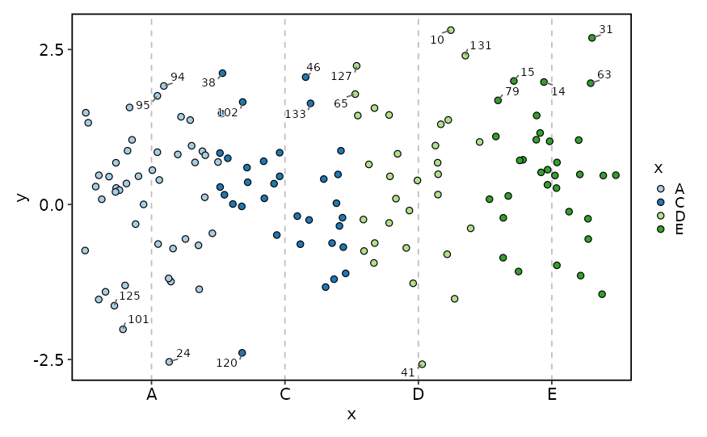
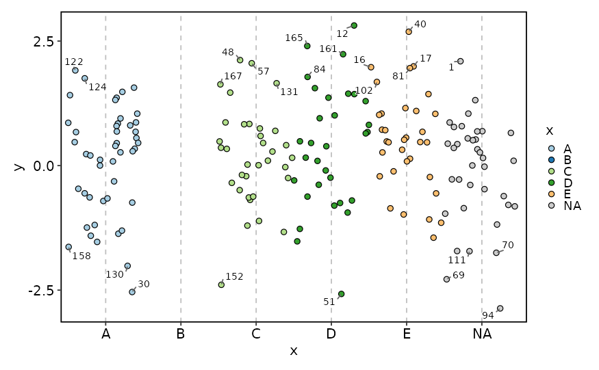
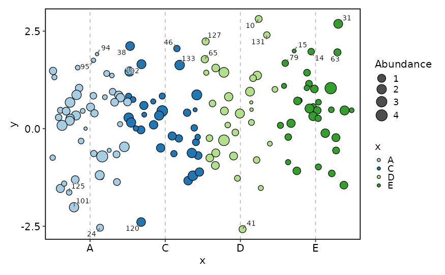
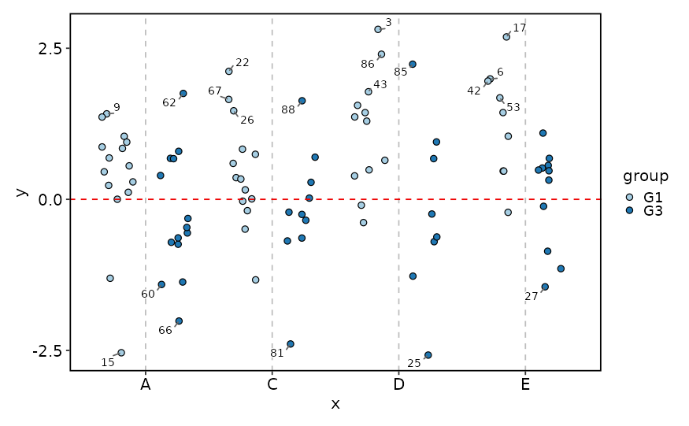
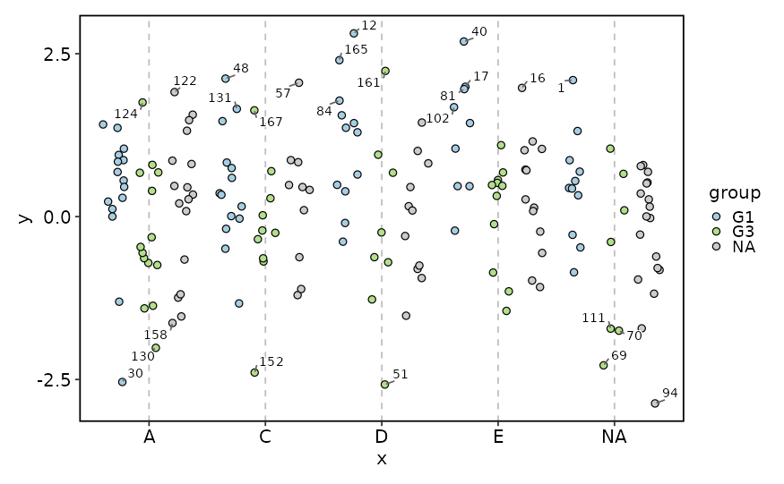
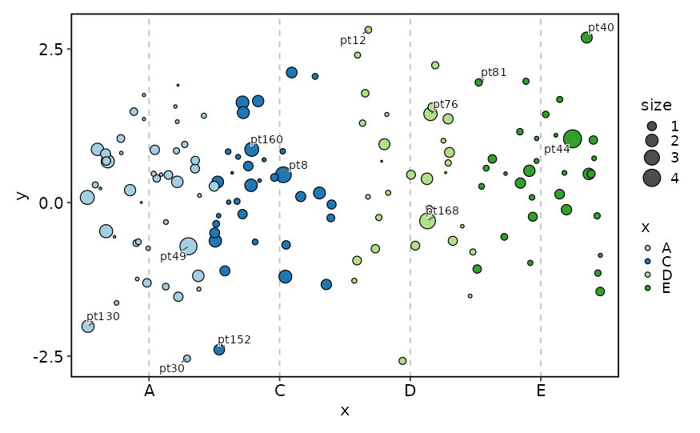
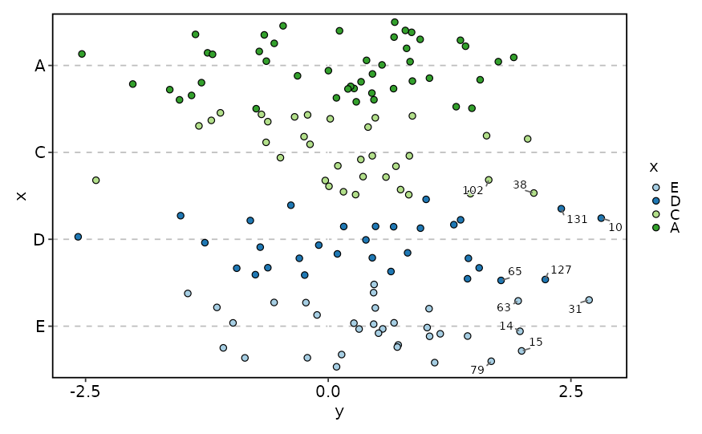

Draws a jittered point plot showing the distribution of numeric y-values across a discrete x-axis. Each data point is rendered with random jitter along the x-axis (and optionally the y-axis) to reduce overplotting, making it easy to visualise data density, spread, and outliers within each category.
The function supports x-axis reordering by y-value summaries
(mean or median), group dodging via group_by to compare
subgroups side-by-side, point labelling with automatic top-n
selection using a configurable distance metric (default: radial distance
y^2 + size^2), point highlighting for emphasis, optional
horizontal reference lines, and wide-format input via
in_form. Colour control, faceting, and splitting into separate
sub-plots via split_by are supported.
Usage
JitterPlot(
data,
x,
x_sep = "_",
y = NULL,
in_form = c("long", "wide"),
split_by = NULL,
split_by_sep = "_",
keep_na = FALSE,
keep_empty = FALSE,
sort_x = c("none", "mean_asc", "mean_desc", "mean", "median_asc", "median_desc",
"median"),
flip = FALSE,
group_by = NULL,
group_by_sep = "_",
group_name = NULL,
x_text_angle = 0,
order_by = "-({y}^2 + {size_by}^2)",
theme = "theme_this",
theme_args = list(),
palette = "Paired",
palcolor = NULL,
palreverse = FALSE,
alpha = 1,
aspect.ratio = NULL,
legend.position = "right",
legend.direction = "vertical",
shape = 21,
border = "black",
size_by = 2,
size_name = NULL,
size_trans = NULL,
y_nbreaks = 4,
jitter_width = 0.5,
jitter_height = 0,
y_max = NULL,
y_min = NULL,
y_trans = "identity",
add_bg = FALSE,
bg_palette = "stripe",
bg_palcolor = NULL,
bg_alpha = 0.2,
add_hline = NULL,
hline_type = "solid",
hline_width = 0.5,
hline_color = "black",
hline_alpha = 1,
labels = NULL,
label_by = NULL,
nlabel = 5,
label_size = 3,
label_fg = "black",
label_bg = "white",
label_bg_r = 0.1,
highlight = NULL,
highlight_color = "red2",
highlight_size = 1,
highlight_alpha = 1,
facet_by = NULL,
facet_scales = "fixed",
facet_ncol = NULL,
facet_nrow = NULL,
facet_byrow = TRUE,
title = NULL,
subtitle = NULL,
xlab = NULL,
ylab = NULL,
seed = 8525,
combine = TRUE,
nrow = NULL,
ncol = NULL,
byrow = TRUE,
axes = NULL,
axis_titles = axes,
guides = NULL,
design = NULL,
...
)Arguments
- data
A data frame.
- x
A character string specifying the column name for the x-axis. Must be character or factor. Multiple columns can be provided; they are concatenated with
x_sepas the separator. Whenin_formis"wide", thexcolumns are used as key columns and pivoted to long format (they are not concatenated).- x_sep
A character string used to join multiple
xcolumns. Default"_". Ignored whenxis a single column or whenin_formis"wide".- y
A character string specifying the numeric column for the y-axis. Required when
in_formis"long"(default). Whenin_formis"wide",yis not required — the values under thexcolumns are used as y-values.- in_form
A character string specifying the input data format. Either
"long"(default) or"wide". In"long"format,xandyare separate columns. In"wide"format, thexcolumns contain the y-values and are pivoted to a key-value pair.- split_by
The column(s) to split the data by and produce separate sub-plots. Multiple columns are concatenated with
split_by_sep.- split_by_sep
A character string to separate concatenated
split_bycolumns. Default"_".- keep_na
A logical value or a character to replace the NA values in the data. It can also take a named list to specify different behavior for different columns. If TRUE or NA, NA values will be replaced with NA. If FALSE, NA values will be removed from the data before plotting. If a character string is provided, NA values will be replaced with the provided string. If a named vector/list is provided, the names should be the column names to apply the behavior to, and the values should be one of TRUE, FALSE, or a character string. Without a named vector/list, the behavior applies to categorical/character columns used on the plot, for example, the
x,group_by,fill_by, etc.- keep_empty
One of FALSE, TRUE and "level". It can also take a named list to specify different behavior for different columns. Without a named list, the behavior applies to the categorical/character columns used on the plot, for example, the
x,group_by,fill_by, etc.FALSE(default): Drop empty factor levels from the data before plotting.TRUE: Keep empty factor levels and show them as a separate category in the plot."level": Keep empty factor levels, but do not show them in the plot. But they will be assigned colors from the palette to maintain consistency across multiple plots. Alias:levels
- sort_x
A character string controlling x-axis level reordering by y-value summaries. One of
"none","mean_asc","mean_desc","mean","median_asc","median_desc","median"."none"leaves the levels as-is."mean_asc"/"mean"sorts by ascending mean of y."mean_desc"sorts by descending mean."median_asc"/"median"sorts by ascending median."median_desc"sorts by descending median. Default:"none".- flip
A logical value. When
TRUE, the x and y axes are swapped viacoord_flipand the x-axis factor levels are reversed. Dimension calculation accounts for the flip. Default:FALSE.- group_by
A character vector of column names for dodging the points. Each unique combination becomes a separate dodge group and the points are offset horizontally via
position_jitterdodgeto reduce overlap. Multiple columns are concatenated withgroup_by_sep. WhenNULL(default), no dodging is applied — only jitter viaposition_jitter.- group_by_sep
A character string used to join multiple
group_bycolumns. Default"_".- group_name
A character string for the dodge-group legend title. When
NULL(default), thegroup_bycolumn name is used.- x_text_angle
A numeric value specifying the angle of the x-axis text.
- order_by
A string expression passed to
arrange()to determine which points are labelled. Evaluated within each x-group (and facet panel whenfacet_byis set). Default:"-({y}^2 + {size_by}^2)", which selects points farthest from the origin in y-size radial distance, analogous to VolcanoPlot.- theme
A character string or a theme class (i.e. ggplot2::theme_classic) specifying the theme to use. Default is "theme_this".
- theme_args
A list of arguments to pass to the theme function.
- palette
A character string specifying the palette to use. A named list or vector can be used to specify the palettes for different
split_byvalues.- palcolor
A character string specifying the color to use in the palette. A named list can be used to specify the colors for different
split_byvalues. If some values are missing, the values from the palette will be used (palcolor will be NULL for those values).- palreverse
A logical value indicating whether to reverse the palette. Default is FALSE.
- alpha
A numeric value in
[0, 1]controlling point transparency. Default:1.- aspect.ratio
A numeric value specifying the aspect ratio of the plot.
- legend.position
A character string specifying the position of the legend. if
waiver(), for single groups, the legend will be "none", otherwise "right".- legend.direction
A character string specifying the direction of the legend.
- shape
A numeric value specifying the point shape (ggplot2 point shape codes). Shapes 21–25 are filled shapes with borders; for these shapes the border behaviour is controlled by
border. Default:21(filled circle).- border
Controls the border of points when the shape has a border (21–25). If
TRUE, the border colour follows the point fill colour (same as the group colour). If a single colour string (e.g."black"), uses that constant border colour for all points. IfFALSE, no border is drawn (NA). Default:"black".- size_by
A numeric column name or a single numeric value controlling point size. When a column name is provided, sizes are scaled using
scale_size_area(max_size = 6)and a size legend is shown. When a single numeric value, all points use that constant size. Default:2.- size_name
A character string for the size legend title. When
NULL(default) andsize_byis a column, the column name is used. Ignored whensize_byis a single numeric value.- size_trans
A function or a function name (as a string) to transform the
size_byvalues for size mapping. The transformed values determine the point size on the plot, but the legend labels show the original (untransformed) values. WhenNULL(default), no transformation is applied.- y_nbreaks
A numeric value hinting at the number of break intervals for the y-axis. Passed to
scale_y_continuous. Default:4.- jitter_width
A numeric value controlling the amount of horizontal jitter (in x-axis units). Passed to
position_jitter/position_jitterdodge. Default:0.5.- jitter_height
A numeric value controlling the amount of vertical jitter (in y-axis units). Passed to
position_jitter/position_jitterdodge. Default:0.- y_max, y_min
Numeric values or quantile strings (e.g.
"q95","q5") for y-axis limits used incoord_cartesian/coord_flip. WhenNULL(default), the data range is used. When a quantile string, the corresponding quantile of the y-values is computed viaquantile().- y_trans
A character string specifying a transformation for the y-axis (e.g.
"log10","sqrt"). Passed toscale_y_continuous. Default:"identity".- add_bg
A logical value. When
TRUE, alternating background stripes are drawn behind the points viabg_layer(), using the x-axis level order. Default:FALSE.- bg_palette
A character string specifying the palette for the background stripe colours. Passed to
bg_layer(). Default:"stripe".- bg_palcolor
A character vector of colours for the background stripes. Passed to
bg_layer(). WhenNULL(default), colours are derived frombg_palette.- bg_alpha
A numeric value in
[0, 1]for the transparency of the background stripes. Default:0.2.- add_hline
One or more numeric values specifying y-values at which to draw horizontal reference lines. When
NULL(default), no reference lines are drawn.- hline_type
A character string specifying the line type for the horizontal reference line(s). Default:
"solid".- hline_width
A numeric value specifying the line width for the horizontal reference line(s). Default:
0.5.- hline_color
A character string specifying the colour for the horizontal reference line(s). Default:
"black".- hline_alpha
A numeric value in
[0, 1]specifying the alpha (transparency) for the horizontal reference line(s). Default:1.- labels
A vector of row names or row indices specifying which points to label. When
NULL(default) andnlabel > 0, the topnlabelpoints per x-group are selected automatically.- label_by
A character string naming a column whose values are used as label text. When
NULL(default), row names are used as labels.- nlabel
An integer specifying the number of points to label per x-group when
labelsisNULL. Points are selected by descending order oforder_by. Default:5. Set to0to suppress automatic labelling.- label_size, label_fg, label_bg, label_bg_r
Label aesthetics for
geom_text_repel.label_size: text size (default3).label_fg: text colour (default"black").label_bg: background (halo) colour for the label text (default"white").label_bg_r: background border radius (default0.1).- highlight
A specification of which points to highlight. Can be:
TRUE(highlight all points), a numeric vector of row indices, a single character string parsed as an R expression, or a character vector of row names. When a point is highlighted, an overlaygeom_pointis drawn on top withhighlight_color,highlight_size, andhighlight_alpha. Default:NULL(no highlighting).- highlight_color
A character string specifying the colour of highlighted points. Default:
"red2".- highlight_size
A numeric value specifying the size of highlighted points. Default:
1.- highlight_alpha
A numeric value in
[0, 1]specifying the transparency of highlighted points. Default:1.- facet_by
A character string specifying the column name of the data frame to facet the plot. Otherwise, the data will be split by
split_byand generate multiple plots and combine them into one usingpatchwork::wrap_plots- facet_scales
Whether to scale the axes of facets. Default is "fixed" Other options are "free", "free_x", "free_y". See
ggplot2::facet_wrap- facet_ncol
A numeric value specifying the number of columns in the facet. When facet_by is a single column and facet_wrap is used.
- facet_nrow
A numeric value specifying the number of rows in the facet. When facet_by is a single column and facet_wrap is used.
- facet_byrow
A logical value indicating whether to fill the plots by row. Default is TRUE.
- title
A character string specifying the title of the plot. A function can be used to generate the title based on the default title. This is useful when split_by is used and the title needs to be dynamic.
- subtitle
A character string specifying the subtitle of the plot.
- xlab
A character string specifying the x-axis label.
- ylab
A character string specifying the y-axis label.
- seed
A numeric seed for reproducibility. Passed to
validate_common_args(). Default:8525.- combine
Logical; when
TRUE(default), returns a combinedpatchworkobject. WhenFALSE, returns a named list of individualggplotobjects.- ncol, nrow
Integer number of columns / rows for the combined layout (passed to
wrap_plots).- byrow
Logical; fill the combined layout by row. Default
TRUE(passed towrap_plots).- axes
A character string specifying how axes should be treated across the combined layout (passed to
wrap_plots).- axis_titles
A character string specifying how axis titles should be treated across the combined layout. Defaults to
axes.- guides
A character string specifying how guides (legends) should be collected across panels (passed to
combine_plots()).- design
A custom layout design for the combined plot (passed to
combine_plots()).- ...
Additional arguments.
Value
A ggplot object (when split_by is NULL), a
patchwork object (when split_by is provided and
combine = TRUE), or a named list of ggplot objects (when
combine = FALSE). All ggplot objects have height
and width attributes in inches.
split_by workflow
When split_by is provided:
validate_common_args()validates theseed.check_keep_na()andcheck_keep_empty()normalise thekeep_na/keep_emptyarguments for all relevant columns (x,split_by,group_by,facet_by).The
split_bycolumn is validated viacheck_columns()withforce_factor = TRUE. Multiplesplit_bycolumns are concatenated withsplit_by_sep.If
split_byis notNULL, the data frame is split (preserving factor level order). Ifsplit_byisNULL, the data is wrapped in a single-element list with name"...".Per-split
palette,palcolor,legend.position, andlegend.directionare resolved viacheck_palette(),check_palcolor(), andcheck_legend().JitterPlotAtomic()is called for each split. Iftitleis a function, it receives the split level name and can generate dynamic titles.Results are combined via
combine_plots()(whencombine = TRUE) or returned as a named list.
Examples
# \donttest{
set.seed(8525)
n <- 180
x <- factor(
sample(c("A", NA, LETTERS[3:5]), n, replace = TRUE),
levels = c("A", "B", "C", "D", "E")
)
group <- factor(
sample(c("G1", NA, "G3"), n, replace = TRUE),
levels = c("G1", "G2", "G3")
)
size <- rexp(n, rate = 1)
id <- paste0("pt", seq_len(n))
y <- rnorm(n, mean = ifelse(is.na(group), 0, ifelse(group == "G1", 0.5, -0.5))) +
as.numeric(ifelse(is.na(x), 0, x))/10
df <- data.frame(
x = x,
y = y,
group = group,
size = size,
id = id
)
# Basic
JitterPlot(df, x = "x", y = "y")

# Keep empty x levels and NA
JitterPlot(df, x = "x", y = "y", keep_na = TRUE, keep_empty = TRUE)

# Map size with transform; legend shows original values
JitterPlot(df, x = "x", y = "y", size_by = "size", size_name = "Abundance",
size_trans = sqrt, order_by = "-y^2")

# Dodge by group and add a horizontal line
JitterPlot(df, x = "x", y = "y", group_by = "group",
add_hline = 0, hline_type = "dashed", hline_color = "red2")

# Keep the empty levels only for color coding
# Note the G3 is not blue (which is taken by unused level G2)
JitterPlot(df, x = "x", y = "y", group_by = "group",
keep_na = TRUE, keep_empty = 'level')

# Label top points by distance (y^2 + size^2)
JitterPlot(df, x = "x", y = "y", size_by = "size", label_by = "id", nlabel = 3)

# Flip axes
JitterPlot(df, x = "x", y = "y", flip = TRUE)

# }